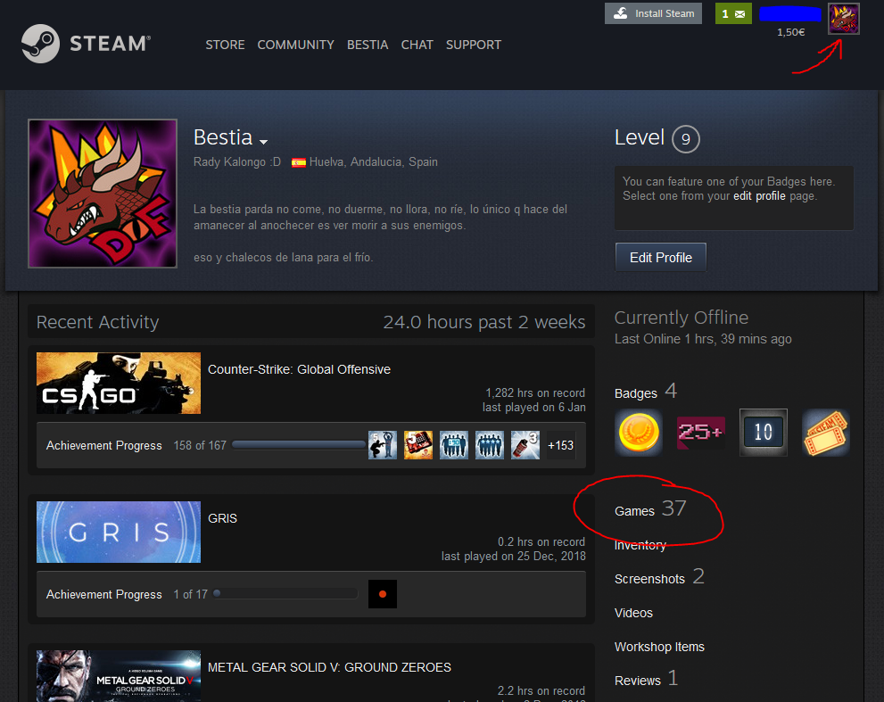
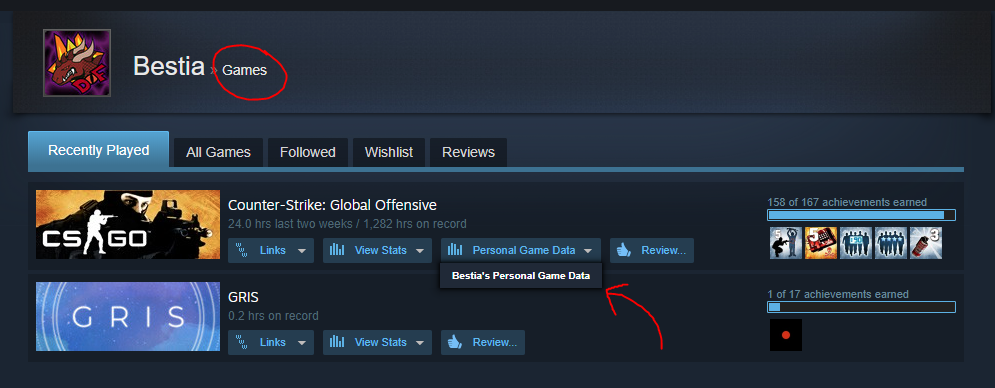
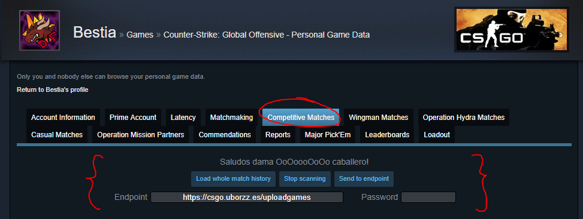

Tras haber descargado y activado el plugin de Chrome...
Acceder a la web de Steam y Logear
Ir a tu perfil, clickando por ejemplo en tu portrait y seleccionar Games del panel derecho.
Desplegar la personal game data en el item de Counter Strike: Global Offensive.
Ir a la pestaña Competitive. Si habéis instalado bien mi plugin, aparecerán unos botones extra.
Una vez en la pestaña con la información de las competitivas, el modo de uso sería:
El contenido subido se vera actualizado en unos instantes en la pestaña competitive.